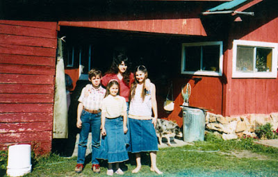

 |
| Enemies of the State: Samuel and Vicki Weaver (left and rear-center) pose with Sara and Rachel. |

Sara
Weaver has forgiven the people responsible for murdering her mother Vicki and
younger brother Samuel twenty years ago. Lon Horiuchi, the FBI sniper who
shot Vicki in the head while she was holding a ten-month-old infant, is still
being sheltered by the Regime that employed him. If he were any part of a man,
Horiuchi would make a pilgrimage to Sara’s home in Montana to express remorse
for the crimes he committed against her family.
Shortly
before he murdered Vicki on August 22, 1992, Horiuchi attempted to murder her
husband, Randy Weaver – a man who had done nothing to harm any living soul. Acting
under “rules of engagement” that were tantamount to a murder warrant, Horiuchi
shot Randy in the back, attempting to kill him instantly by severing his spinal
cord.
Owing to a last-second motion by Randy, the bullet hit his shoulder and
exited his armpit. Randy and a visiting family friend named Kevin Harris fled
back to their cabin. Vicki Weaver flung open the door and was shot in the head
by Horiuchi. The same round used to murder Vicki ended up wounding Harris.

At
the time Horiuchi attempted to murder him, Randy was visiting the forlorn
outbuilding that sheltered the lifeless body of his only son, 14-year-old
Samuel, who had been murdered the previous day by U.S. marshals preparing to
ambush the Weaver family. Three of the six camouflaged marshals threw rocks to
distract the Weaver family’s dogs. When Samuel and Harris went to investigate, a
marshal panicked and shot one of the dogs.
After Samuel fired in the direction
of the gunshots, Randy told him to return to the cabin.
“I’m
coming, Dad,” shouted Samuel.
At that point, one of the marshals, in keeping
with the standards of valor expected of those who serve the federal Leviathan,
shot the 14-year-old in the back.
| Future Murderer Lon Horiuchi. |

In what a jury later found to be a lawful use
of defensive force, Harris returned fire. Deputy Marshal William Degan was
killed in the gunfight. The Feds claimed that he was killed in the first shot
of the skirmish. This was a lie, of course: He had fired at least seven rounds
before stopping one, and it’s likely that he was killed by “friendly fire.”
For
nine days, Sara had to care for her baby sister, Elishiba, as well as her
ten-year-old sister Rachel while the shattered body of her mother decomposed in
the family’s cabin. Their home – or “compound,” as it was characterized by the criminals
who besieged it, and the media functionaries who retailed their self-serving
lies -- was surrounded by a small army of federal, state, and local law
enforcement personnel.
Sara
and the other survivors also had to endure the mocking sadism of the FBI agents
who had murdered Vicki and Samuel. One morning they were awoken by a taunting
message broadcast over a loudspeaker: “Good morning, Mrs. Weaver. We had
pancakes for breakfast. What did you have?”
In
what could be seen as a foreshadowing of the holocaust at Waco’s Branch
Davidian refuge roughly eight months later, the Feds were apparently prepared
to fire-bomb the Weaver home, thereby destroying evidence of their crimes. A news crew from KREM-TV in
Spokane saw several large canisters of gasoline being loaded onto an FBI
helicopter, which took off and circled the cabin – only to veer off
suddenly after being videotaped by observers on the ground.
Much
to the disappointment of the Feds, the standoff ended without additional
bloodshed. Randy Weaver and Kevin Harris
were acquitted of murder charges arising from the death of William Degan. Randy
was found guilty of failing to appear in court to answer a contrived firearms
charge engineered by an ATF provocateur who sought to blackmail the ex-Green
Beret into becoming an informant.

Although
the Weaver family eventually received a large civil settlement courtesy of the
federal government’s tax victims, neither Horiuchi nor his supervisors – Larry Potts
and Danny Coulson -- was ever prosecuted. The Ninth Circuit Court of Appeals,
invoking a specious concept it called “Supremacy Clause Immunity,” ruled that it would be impermissible for a
federal law enforcement officer to face civil or criminal prosecution for
official acts that would otherwise be criminal in nature. Judge Alex Kozinski’s
scalding dissent lambasted the court for creating what he christened the “007
Standard” – a license to kill that was issued "to all law enforcement
agencies in our circuit -- federal, state, and local."
A
few months after issuing that ruling, the court modified it to permit the State of Idaho
to prosecute Horiuchi under state laws. Denise Woodbury, an assistant
prosecutor from Boundary County, was prepared to put Horiuchi on trial, but the
prospect of doing so caused incoming county attorney Brett Benson to lose
bladder control. Accordingly, the individual who murdered Vicki Weaver and
attempted to murder Randy Weaver remains at large.
Prior
to the killings at Ruby Ridge, the Marshals Service had spent a year and a half
spying on the impoverished, isolated Weaver family. This included multiple acts
of criminal trespass and the creation of a network of remote-operated
surveillance cameras on the high ground above the family’s land. Weaver was
considered a fugitive for missing a court hearing after being issued two
summonses giving two different dates. He was to stand trial on firearms charges after
being entrapped by the ATF, which sought to blackmail him into becoming a
federal informant inside the Aryan Nation white supremacist organization.

Weaver’s
first encounter with the Feds came in July 1985, when he was visited by the
Secret Service after a neighbor accused him of threatening the life of
President Reagan. Rather than filing charges against Weaver, the Feds opened a
file on him. Four years later, an ATF undercover informant-provocateur named
Gus Magisano (who used the pseudonym “Kenneth Faderly”) made a business
proposal to Weaver: He offered to buy several shotguns from him if the barrels
were sawed off to his specifications.
With
his family practically starving, Weaver was a motivated seller. His customer
was an eager buyer – but he was also curiously specific regarding the
modifications he wanted on the guns, demanding that Weaver saw off the barrels
at a particular length. Those “illegal” alterations – which left the barrels longer than those on the sixty Remington
870 pump-action shotguns ordered by the IRS a few years ago – offered the ATF
what it thought was sufficient leverage to blackmail Weaver.
In
January 1990, Weaver was visited by ATF Agents Herbert Byerly and Steve Gunderson, who threatened to
prosecute him unless he became an informant. To his eternal credit, Weaver
invited them to inseminate themselves. Since defiance of that kind simply
couldn’t be tolerated, the ATF, acting with the U.S. Marshals Service and
several state and local agencies, initiated the low-intensity war against the
Weaver family that eventually claimed the lives of Vicki and Samuel.
Salt Lake attorney
Jesse Trentadue explains that the federal jihad against the Weavers was an
outgrowth of an FBI initiative called PATCON, or “Patriot
Conspiracy.” The campaign was designed “to infiltrate and incite the milita and
evangelical Christians to violence so that the Department of Justice could
crush them.”
“Ruby
Ridge was a PATCON operation,” Trentadue observes. “Waco was a PATCON
operation. And so, too, I believe was the Oklahoma City Bombing.”
Trentadue’s
understanding of PATCON is the product of long, arduous investigation of the
FBI’s role in inciting domestic terrorism and covering up its officially
sanctioned misdeeds. He is a singularly tenacious and motivated investigator:
His brother, the late Kenneth Trentadue, was murdered by the FBI in an Oklahoma
prison cell on August 21, 1995, after being mistaken for a bank robber named Richard
Lee Guthrie, who was part of a PATCON-connected gang called the Aryan Republican Army.

Shortly
after the April 19, 1995 OKC bombing, Kenneth – who had served time for robbery
and was on parole -- was detained in San Diego as he re-entered the U.S. from
Mexico. His wife Carmen had family down in Mexico, and Kenney (as his brother
calls him) had made a quick trip to visit them down south.
Kenney was stopped
by a border guard who ran a background check on him. He was arrested and
stuffed into a plane bound for Oklahoma City.
At
the time, Kenney Trentadue was 44 years old, in good health, and trying to rebuild
his life. His wife was expecting a child, who was born while Kenney was in
federal custody.
Kenney
assumed that he was being held on a parole violation. He had no idea that he
had been snared in the FBI’s manhunt for “John Doe #2,” an unidentified
co-conspirator in the OKC bombing. While Kenney was in federal custody, indictments
were handed down against Timothy McVeigh and Terry Nichols — as well as
“others unknown”— for their role in the Oklahoma City Bombing. That occurred on
August 10. Kenney arrived at the Oklahoma City Federal Transfer Facility — just
a few miles from the courtroom where McVeigh and Nicholas had been indicted —
on August 18. Three days later, he was dead, supposedly of suicide.

Kenney’s
body was “found” hanging from a bedsheet in his cell. A few hours after this
“discovery,” Kenney’s mother Wilma received a call from acting warden Marie
Cutler informing her that her son had killed himself. In a fashion suggesting
both indifference to the family and a great deal of urgency, Cutler informed
Kenney’s mother that the body was to be cremated very soon.
Although
understandably devastated by her son’s death, Mrs. Trentadue had the
presence of mind to demand that no action be taken to dispose of the body without
the permission of Kenney’s wife. Cutler was surprised to learn that Kenney was
the married father of a newborn son; she had been told he was single, because
the killers had mistaken their victim for somebody else.
Not
only were prison officials indecently eager to cremate Kenney’s body, they were
also frantic to sanitize the “suicide-proof” cell. This was a criminal act of
evidence tampering.
The
floors and walls of the cell were mopped and scrubbed; the bed sheet with which
Kenney had supposedly hung himself was “lost” or destroyed; most of his clothing
ended up in the possession of an FBI agent who –in the finest tradition of that
incurably corrupt agency— let it putrefy in the trunk of his car. Within a few
hours of the “suicide,” the FBI and prison officials managed to “lose” or
destroy most of the critical evidence.
When
Kenney’s mother Wilma and older brother Jesse were finally allowed to see the
body, they did so in the obnoxious company of Michael Hood, regional counsel
for the Bureau of Prisons. As Jesse later recalled the conversation, Hood
issued a poorly disguised warning: “The Bureau of Prisons, the FBI and the U.S.
Attorney’s office — we’re one big Justice Department.”
Left
alone with Kenney’s body, Jesse and his mother peeled away several layers of
post-mortem makeup. They found his body riddled with contusions and other
evidence of a severe beating, administered by both fists and batons. His head
had been repeatedly lacerated, and his throat appeared to have been cut.
“My
brother had been so badly beaten that I personally saw several mourners leave
the viewing to vomit in the parking lot!” Jesse, a trial attorney, wrote in an August 30, 1995 letter to
the Bureau of Prisons. “Anyone seeing my brother’s battered
body with his bruised and lacerated forehead, throat cut, and blue-black
knuckles would not have concluded that his death was either easy or a
‘suicide’! ”

“I
will always be grateful to my brother for his love of life, great heart and
strength,” wrote Jesse. “Had my brother been less of a man, your guards would
have been able to kill him without inflicting so much injury to his body. Had
that occurred, Kenney’s family would forever be guilt-ridden over his death.
Each of us would have lived with the pain of thinking that Kenneth took his own
life and that we had somehow failed him. By making the fight he did for his
life, Ken has saved us that pain, and God bless for having done so!”
Jesse
wasn’t the only one who found the official story facially implausible. Kevin
Rowland, chief examiner for the Oklahoma Medical Examiner’s office, filed a complaint with the FBI describing Kenney’s death as “murder.” The
state’s chief Medical Examiner, Fred Jordan, refused to classify the death as a
suicide, labeling the cause of Trentadue’s death “unknown.”
The
Bureau of Prisons convened a board of inquiry, and — in keeping with Michael
Hood’s promise — slammed the lid down, hard. The attorney heading the probe classified its
findings as “attorney work product,” a move intended to foreclose discovery of
the material in future court actions.
Cover-ups
by corrupt officials are commonplace. However, Jesse Trentadue considered it
strange that federal functionaries were so anxious to conceal the circumstances
of Kenney’s death. Why would the Feds lie about the cause of Kenney’s death,
and then spare no effort to destroy all the evidence?
Shortly
after sending his letter to the BOP, Jesse received an anonymous phone call
providing him with an explanation: “Look,
your brother was murdered by the FBI. There was an interrogation that went
wrong…. He fit a profile.”
Kenney
fell victim to a case of mistaken identity of Dickensian
dimensions. He was a near-physical match for Richard Lee Guthrie. They were the
same age, and shared the same build -- 5’9″ tall and a muscular 180-190 lbs.
Each was brown-haired, with a dragon tattoo on his left forearm. Most
importantly, Guthrie was a bank robber, as Kenney had been before going to
prison. More specifically, Guthrie robbed banks on behalf of the Aryan
Republican Army, which conducted some 22 bank heists in the early 1990s and
netted about $250,000 to fund domestic terrorism. At the time of Kenney’s
arrest, Guthrie was already somewhere in the bowels of the federal prison
system.
Like Kenney, Guthrie would later be the victim of an anomalous prison suicide: His body was “found” by a guard hanging from a bedsheet. Just before his death in 1996, Guthrie had told the Los Angeles Times that he was writing a memoir that would, among other things, describe connections between the ARA and the OKC bombing.
Like Kenney, Guthrie would later be the victim of an anomalous prison suicide: His body was “found” by a guard hanging from a bedsheet. Just before his death in 1996, Guthrie had told the Los Angeles Times that he was writing a memoir that would, among other things, describe connections between the ARA and the OKC bombing.
Guthrie wasn't the only other inmate connected to the Trentadue case who would
wind up dangling lifelessly from the ceiling of his cell. Alden Gillis Baker,
an inmate at the OKC Transfer Center, told Jesse that he had overheard an
“altercation” involving “a lot of physical violence” the night Kenney was
killed; that was followed by “faint moaning” and the sound of bedsheets being
torn. Baker repeated that account in a subsequent deposition that was rejected
by a judge. In 2000, Baker was also “found” hanged to death by a guard in a
California federal prison.
As
this body count demonstrates, the Feds were desperate to conceal something genuinely
horrible. Jesse’s understanding of the magnitude of the cover up expanded considerably in 2004, when
he received — from a sympathetic source at the FBI — two redacted documents
proving that the FBI had been aware of a connection between the OKC bombing and
the Aryan Republican Army, which in turn was connected to a bizarre white
supremacist commune in Oklahoma called Elohim City.
That
tip primed a Freedom of Information Act Request that dislodged more than 250
pages of documents — all of them heavily censored — confirming that the FBI and
other federal agencies (including the ATF, which had planted
Carol Howe at Elohim City) had abundant and detailed advance
intelligence of the 1995 bombing.
As
is the case with any significant gathering of white supremacists, Elohim City
was a wholly owned subsidiary of the FBI. In addition to Carol Howe (whose
cover was blown by her handler when she actually tried to expose those
responsible for the OKC bombing), the late Robert Millar, the cult’s patriarch,
was also on the federal payroll.
The
group’s head of security, a dodgy German national named Andreas Strassmeir, has
been identified as an intelligence asset for both Washington and his own
national government. A hyper-violent Klan activist named Dennis Mahon, who also
spent time at Elohim City, was likewise a paid snitch. At least one other
individual there was taking notes and passing them along to the Southern Poverty
Law Center, a quasi-private secret police adjunct headed by self-promoting
fraud and sexual degenerate Morris Dees.
At
least two ARA members were “part-time” residents of Elohim City, and there is abundant
reason to believe that Timothy McVeigh — who called the commune just shortly
before the OKC bombing — had collaborated with the ARA in carrying out at least
some of their robberies.
In
2007, shortly after filing his FOIA request for the OKC bombing videos, Jesse
Trentadue contacted by Terry Nichols — who is serving a life sentence for his
role in the bombing, and cannot be tried again on capital charges. With
Trentadue’s assistance, Nichols filed a deposition in a Salt
Lake City federal court.
Not
only did Nicholes implicate the ARA in the bombing plot, he claimed that
McVeigh — who allegedly had been recruited as an undercover intelligence asset while in the Army — had been working under the supervision of Larry Potts,
the same FBI official who wrote the murderous “rules of engagement” at Ruby
Ridge and later supervised the annihilation of the Branch Davidians at Mt.
Carmel, Texas.

The Feds weren't
pursuing Richard Lee Guthrie for the purpose of solving a crime; they were hunting
him as part of a nation-wide drive to tie up loose ends in what was
either a criminally inept "sting" operation, or a full-fledged
false-flag attack at Oklahoma City.
Once Kenneth Trentadue became another loose end, he was tortured and beaten to death -- but his brother, God bless him, was determined to pull as hard as he could on the few frayed threads he could find.
“The
only difference between the FBI and the KGB,” Jesse Trentadue wearily
concludes, “is that the Soviet secret police never pretended to be a legitimate
law enforcement agency.” That observation was shared on August 21 – twenty
years after federal marshals murdered Samuel Weaver, and the seventeenth anniversary
of the torture-murder of Kenneth Trentadue, both of whom were victims of the FBI’s ongoing PATCON initiative.
Once again, many thanks...
... to everyone who has participated in the Pro Libertate moneybomb. We deeply appreciate your generosity. God bless!
Dum spiro, pugno!
22 comments:
You could tie in Yeakey with this, I think.
http://tytruth.com/
The ADL/FBI & ADL/ATF work for the Synagogue of Satan that PRINTS THE CURRENCY...OWNS THE MEDIA and operates a crackhouse "KOSHER BROTHEL" called CONGRESS...
"THEY" don't work for us..."
THEY are the domestic and International ECONOMIC TERRORISTS...and "THEY" claim to be all 12 tribes, while 90% are in fact Not Semitic and Not Hebrews..
http://www.hardylaw.net/Carlos.html
you know what I HATE....TERRORISTS MURDERING MY NEIGHBORS USING MILITARY EQUIPMENT & MATERIEL AND BLAMING A "PATSY"....and then lying about it...on TALMUDVISION & in the TALMUDIC COURTS...Jesus, I really hate that...
Marshal Degan wash shot in the Back, and 5 "ATF" agents died...
- 22nd hour 9/11 tapes....Israeli ?
Anonymous above, with his incoherent rant is just a paid gov't shill here to discredit all of us.
Great article, Will. Very few people know the story of Kenneth Trentadue, despite the fact that it is so well documented (far better documented than any 9/11 conspiracy) and so very troubling. It also has all the elements of a Hollywood thriller, although state-worshiping Hollywood would never touch this subject.
I've heard Jesse Trentadue say that he believes his brother was killed in a botched interrogation. But my reading of the evidence suggests that, as you have speculated here, he was killed deliberately to cover up McVeigh's connection to Elohim City.
The bigger question now is: Was Oklahoma City a sting operation gone wrong, or a false flag event? Maybe it was both. Maybe the mishandling of a sting operation was orchestrated by a few well-placed operatives.
Just another case where people are deep-sixed in order to tie up any loose strings. How many times and in how many other cases was the same done?
Truth hurts the U.S. government, which should now be acknowledged as totally illegitimate. Let the punishment fit the crime. Twenty years later, and Marine veteran Brandon Raub was targetted for a forced psychiatric evaluation, only to be liberated by a Circuit Court Judge, August 22, 2012, as we all know now. Tying up loose ends, and trying to make the FBI look proactive; following the false flag Aurora theater shooting, right guys? That whole scenario of one lone shooter named James Holmes has fallen pretty flat. The rats are scurrying.
This is so incredibly sad. It really makes you wonder how many people will sell their souls for the system that turns us into slaves- just so they can get better scraps than the rest of us- while protecting the billionaires who want to destroy truth, knowledge, love, and life, because it threatens their greed-blinded egos.
All I can think to make myself feel better is that in my life I have experienced many times that Karma is real, and I believe these people will pay for what they have done. They can not hide from the all-knowing force that is behind our visible world.
AND death isn't real- NO ONE can be killed, really. We can only depart from the prison of the physical world, and be set free.
Both Gerry Spence and Paul Harvey were credits to their professions during the Randy Weaver saga. Probably the only reasons Weaver didn't end up dead or buried in a Federal prison for the rest of his life.
Hard to say enough good things Will. My only suggestion would have been to add the horrific way the the FBI murdered Gordon Kahl.
http://www.constitution.org/abus/gkahl/kahl.htm
ARA was a .gov front yet I've seen them included, recently, in a list of "White Power TERRORISTS" this was after the Sikh Temple shooting. Almost ALL of, if not all, and I lead towards the all, of "White Nationalist" groups are infiltrated by 2 distinct groups, LEO and "Civilian" NGOs such as the ADL, AJC et al. The hapless misfits who are arrested for "plots" in such groups are Entrapped by LEO and/or their civilian masters. The case of the 2 kids in Tennessee a few years back who were alleged to wear TUXEDOS and kill various Blacks and etc is a real doozy: they were GIVEN a SAWED OFF SHOTGUN by one of these "civilian" "watchdog" groups who then, tell their LEO lapdogs to go SIC'EM the poor saps are now doing HEAVY TIME. They were about 17 and 18 IIRC.
The government is a RICO statute organization, but who will arrest the criminals who wear badges or rank as the TOP LEO IN THE NATION? I mean Holder was allowed by the GOP led House F&F committee to RECANT his testimony, which was PERJURY if you are a regular person.
FALL USSA, FALL!
I live in an affluent neighborhood with miles and miles of
beautiful homes, thousands of well kept yards and new cars
but not ONE young boy playing outside. NOT ONE.
Video games + TV = Public Policy.
"If you want a picture of the future,
imagine a boot stamping on a human face — forever." -The Party
One grammatical quibble:
"...Neither Horiuchi nor his supervisors, Larry Potts and Danny Coulson, were never prosecuted."
Correction: Ever prosecuted.
By the way, I am a LEO who works for the State of New York. I have become a regular reader here and appreciate your work.
There are LEO's on your side and the public's. But they are becoming a shrinking majority. It's hard for us to combat the fascists among us when the federal, state and local money favors the fascists.
If you haven't ever read or recommended them, I suggest looking up "Don't talk to the police" on YouTube and also check out the videos at Flex Your Rights.
Some of us still hold the Constitution above all, still fight about it in the patrol cars and locker rooms, and even get into fistfights about it. But like I said, we are shrinking in number.
I wanted to get out of Law Enforcement but my wife said we can do better by sticking with it and fighting from the inside.
The best advice I can give is record everything with your phone (possibly the greatest equalizer since the Peacemaker, though it's good to have one of those too. And a .308).
Keep up the fight
Molon Labe
Another great piece Will. This one really hit a nerve as these are the exact things that first caused me to start questioning everything i heard from the government.
A Detroit Talk Radio host Mark Scott, who I became an occasional cigar smoking buddy with at a cigar shop across from my office, was all over all these things as they were happening and had all documentation of all the connections leading back to government operations.
We talked for hours about what had really happened at OKC and who really was running the show.
Thanks for refreshing my old brain cells with the reason I am who I am today.
Hm. Who is the current Boundary County, Idaho, DA? Is it possible to set up a fund for the purpose of prosecuting Horiuchi?
Thanks for great articles.
Scary and sad how quickly our U.S. has accelerated into the classic police state.
Government was evil enough during days of Janet Reno's Ruby Ridge; but now, just look at how much worse things have become with Janet Napolitano's near total surveillance via Internet, drones, etc.
Younger generation is in for a truly disappointing future -- especially when their Orwellian existence becomes compared to an earlier era.
Hopefully, information from writers like yourself will be helpful.
Another in a long line of outstanding posts, Will.
What happened at Ruby Ridge, unfortunately, has become minor in light of what has happened over the past 20 years in Amerika.
For some reason, Mr. Horiuchi has never returned to the State of Idaho since the Ruby Ridge incident. I wonder why that might be...
Moriarity:
Arguments and fistfights, eh? I guess you feel vindicated for writing that,
but when the People finally awake, recognize that the overwhelming
majority of those on YOUR side of the "thin blue line" are their staunch
adversaries, oppressors and servants of their Enemy, and come after
them with malicious intent, which side will you choose, I wonder?
Unfortunately, I'm confident that I already know the answer, but it is
sometimes comforting, if fallacious, to pretend that any member of
the oppressor class is salvagable...
I know which side I would choose. I do so everyday, and I am villified for it. I'll never be promoted. I've been thrown to wolves and had back up arrive late and then taken myself to the hospital later. Nobody rushes to help me anymore. And yet I still believe in what I do.
I choose long ago, and even if I were to change my mind now, the thin blue line won't protect what they see as a traitor.
I really am on your side. You don't need to believe me, I'll still help you if I am able.
I remember Ruby Ridge.
Wow this shit you can't make in tv or games. Whoever said the truth is stranger that fiction called it right.
To think the FBI did something like this all under the guise of "law enforcement" at least the KGB despite there brutality were not hypocrites unlike the FBI.
I feel sad for victims there families and especially for honest FBI agents there swimming in a sea of shit with no way out other than leave agency or become the villain
Good article, thank you! I didn't know details of the Ruby Ridge story.
Post a Comment